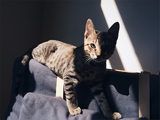

Descripcion
Git el gato es un gato doméstico mexiano que desafortunada o afotunadamnte fue abandonado por su madre biologica. Fue rescatado por Marulango cuando regresaba a su casa de ver una pelicula
Disfruta de subirse a los escritorios y de llena de pelo su sillon(por que el sillon al contrario de lo que sus humanos puedan pensar, es suyo)
Galería
